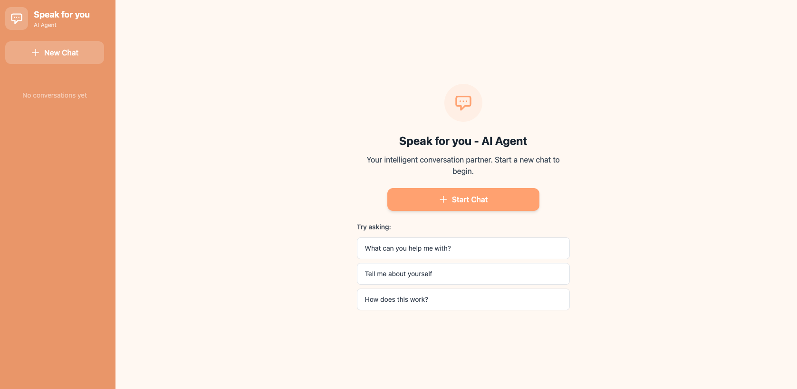

AI Agent
FRONT-END ENGINEER
具備三年 React 前端開發經驗，熟悉 TypeScript、狀態管理與 API 串接，目前參與企業級 CRM 系統建置，也持續延伸後端協作能力。
PROJECTS
EXPERIENCE
SKILLS
法國雷恩第二大學附屬語言學校 CIREFE
2009 — 2010社會心理學系
2003 — 2007擔任《衣櫃裡的貓》編劇，入圍第 51 屆金鐘獎最佳編劇獎。
2016工作期間考取有氧健身教練證照，熱愛運動並樂於與他人分享。
2019